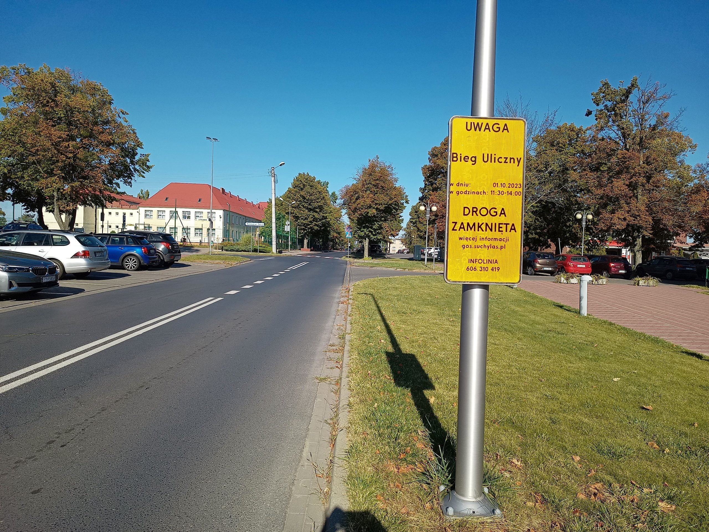
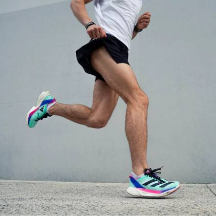

| Gatunek | Samiec | Samica |
|---|---|---|
| Czlowiek | 9,58s | 10,49s |
| Pies | 13,25s* | N/A |
| Ślimak | ok 2h** | ok 2h** |
** źródło
*tak na prawdę nie wiem jaki jest rekord, ale trafiłem ostatnio na bardzo uroczy
filmik, w którym pies osiągnął własnie taki wynik:
Lista wyników dr. Adama Malinowskiego w poszczególnych zawodach organizowanych przez Fundację Maraton Warszawski:
- 6 Półmaraton Warszawski (2011): 1:51:32
- 8 Półmaraton Warszawski (2013): 1:34:59
- 10 Półmaraton Warszawski (2015): 1:32:50
- 11 Półmaraton Warszawski (2016): 1:30:52
- 33 Maraton Warszawski (2011): 4:03:08
- 34 Maraton Warszawski (2012): 3:41:41
- 35 Maraton Warszawski (2013): 3:37:43
Niestety są to bardzo długie dystany które blokują sporą część miasta

Why did the runner become a circus clown?
Because he wanted to juggle running shoes while balancing on a unicycle, all while eating a marathon of pancakes!ten zart zostal wygenerowany przez chatgpt (nie mam pojecia gdzie dowcip)
Fragment edukacyjny - poznaj części nogi
